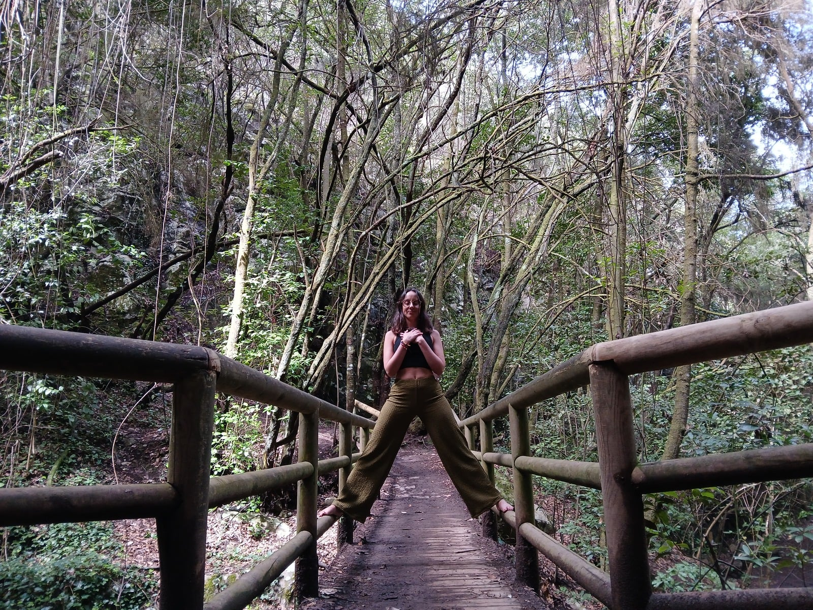

Te sientes desconectada de la vida que has construido: pareja, entorno, rutinas…
ACOMPAÑAMIENTO EMOCIONAL
PARA TRANSITAR TUS CAMBIOS
Cuando por fin empiezas a elegirte...
todo alrededor empieza a romperse.
Caminar(se) es un espacio íntimo y ético para acompañar el tránsito entre lo que ya no encaja y lo nuevo que aún no sabes cómo habitar.
Te acompaño en ese vértigo de perder certezas, relaciones… o partes de ti. No para repararte. Sino para sostenerte mientras eliges no dejarte atrás.

01 / PROCESO · LÍMITES · CAMBIO
CONCEPTO
¿Qué es Caminar(se)?
Es un acompañamiento emocional pensado para personas que están atravesando un cambio interno profundo. No se trata de superar una ruptura ni de alcanzar una meta. Se trata de sostenerte en el momento exacto en el que ya no puedes ser quien eras, y aún no sabes quién estás empezando a ser.
Humana · Honesta · Serena · Consciente · Acompañante · Sin juicios
SEÑALES DE TRÁNSITO
Acompaño procesos como estos:
Has empezado a elegirte… y todo alrededor se mueve o se rompe.
Estás en pausa, sin certezas, con culpa o miedo por dejar atrás lo que ya no encaja.
Te reconoces en patrones de dependencia emocional o complacencia, y no quieres seguir ahí.
“Caminar(se) es el espacio donde todo eso puede nombrarse, respirarse, y sostenerse sin juicio.”
MÉTODO Y PRESENCIA
¿Cómo es el acompañamiento?
-
No hay métodos cerrados, pero sí presencia real y experiencia sostenida.
-
Trabajo con escucha activa, mirada transgeneracional y herramientas emocionales.
-
Tú marcas el ritmo. Yo acompaño desde el cuidado y la ética.
El objetivo no es llegar a ninguna parte.
Es volver a habitarte.
PRIMER CONTACTO
¿Quieres saber si esto es para ti?
Te ofrezco una llamada gratuita de 20 minutos. Me cuentas lo que estás viviendo. Te cuento cómo trabajo. Y tú decides.
Quiero reservar mi llamada gratuita
SOBRE MÍ · ICÍAR ALONSO
HUMANA Y CERCANA
Sobre mí
Soy Icíar. Y no trabajo desde fórmulas, sino desde la experiencia. También yo he transitado rupturas internas, identidades que se caen, decisiones que remueven todo.
Mi formación incluye coaching ecointegrativo, inteligencia emocional, análisis transgeneracional y herramientas de acompañamiento familiar y de pareja. Pero lo más importante es que sé lo que significa recomponerse desde dentro.
Formación profesional
Aunque ya te conté que no trabajo desde fórmulas, sí hay un respaldo profesional detrás. Aquí te dejo las formaciones que me han acompañado (y algunas que sigo en camino).
- Coach Ecointegrativa (ICF & ASESCO)
- Coaching educativo (Método 7 colores & Educar Viéndonos)
- Coaching de familia y pareja
- Inteligencia Emocional
- Heridas Emocionales
- Análisis Transgeneracional
- Actualmente cursando Practitioner en PNL, con certificación ICF.
TESTIMONIO ANÓNIMO
Lo dicen ellas
Testimonios reales compartidos de forma anónima, con el consentimiento de las personas acompañadas.
La confianza en mí misma ha crecido muchísimo. Aprendí a mirarme con amor, con paciencia, incluso con orgullo por decisiones que antes dudaba. Es duro, pero necesario. Esta profundidad solo está en procesos como este.
Por primera vez me comprometí con cada propuesta del proceso. Incluso lo que no entendía en el momento, luego cobraba sentido. Sentí que Icíar se adaptaba a mí, sin forzarme. Y el espacio físico, esos pasos entre árboles, fue parte de la transformación.
Acogimiento. Refugio. Claridad. Honestidad. Pasión. Así describiría lo que viví aquí. Sin juicio, con sostén. Lo recomiendo siempre que alguien me cuenta que se siente perdida.
RESPUESTAS CLARAS
Preguntas frecuentes
No. No es necesario que haya una ruptura externa. Muchas veces acompañamos un proceso interno: cuando ya no encajas donde estabas, pero aún no sabes dónde ir.
En absoluto. Puedes estar en un momento de duda, de pausa, de miedo… No hace falta tocar fondo. Hace falta solo sentir que no puedes (ni quieres) seguir igual.
No. Es un proceso de acompañamiento emocional. No diagnóstico, no patologiza, no impone. Acompaña desde la vivencia y la escucha.
No hay una duración fija. Los packs están pensados como una forma de comenzar: 3 sesiones pueden darte mucha claridad, y 6 un sostén más profundo. A veces ahí termina. A veces se necesita continuar. Lo importante no es cerrarlo “bien”, sino sentirte acompañada en un proceso que es solo tuyo.
REGALO
Por llegar hasta aquí, quiero regalarte algo
Caminar(se) empieza con un primer paso.
Un momento de calma
Aquí tienes una mini meditación guiada para soltar lo que pesa y volver a tu calma. Haz clic y te llevo a la página para recibirla por email.
Si no aparece en tu bandeja principal, revisa spam o promociones (a veces se esconde ahí)
Ritual guiado: “Lo que no se dijo”
Una experiencia simbólica en 3 audios, para cerrar procesos abiertos sin necesidad del otro. Este recurso está pensado para momentos en los que quedó algo por decir, sentir o soltar… y quieres hacerlo desde dentro.
Puedes hacerlo sola, a tu ritmo. Es un regalo para ti.
Descubre cómo salir del bucle del juicio y los malentendidos
Este workbook te guía paso a paso para identificar lo que realmente ocurre en una situación de conflicto y cómo liberar la carga emocional que generas al interpretarla desde la herida. Con ejercicios prácticos y preguntas poderosas para mirar de frente lo que duele… y dejar de tomártelo personal.
Caminar(se) también es dejar de creerte todo lo que dice tu mente.
Caminar(se) no es un proceso para cambiar quién eres, sino para volver a ti, con todo lo que eres ahora.
Caminar(se) empieza con un primer paso.